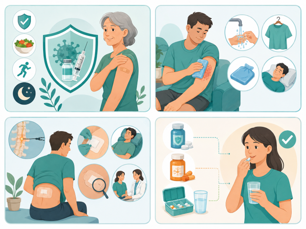

带状疱疹是水痘-带状疱疹病毒再次活跃引起的疾病，常表现为单侧成簇疱疹，并伴有灼烧样、针刺样或电击样疼痛。
部分患者在皮疹消退后仍可持续疼痛，这种情况称为带状疱疹后神经痛。
一旦出现可疑皮疹或明显疼痛，应尽早到医院就诊，越早规范治疗，效果通常越好！

| 药物类别 | 用药提醒 |
|---|---|
| 抗病毒药 如阿昔洛韦、伐昔洛韦等 |
应尽早、按时、按量服用；若有肾功能问题或正在服用其他药物，请主动告知医生。 |
| 止痛药 | 应按医嘱使用。若服药后出现胃部不适、明显头晕等情况，应及时告知医护人员，不要自行叠加同类止痛药。 |
| 神经病理性疼痛药 如加巴喷丁、普瑞巴林等 |
开始用药或调整剂量时，可能出现头晕、嗜睡，注意防跌倒。 |
| 外用药 | 只在医生指导下使用，按规定部位和次数涂抹；如局部刺激明显或破溃加重，应及时咨询医生。 |
| 通用提醒 | 请如实告知药物过敏史、基础疾病及正在使用的全部药物；不要擅自加量、减量、漏服后重复补服或突然停药。 |